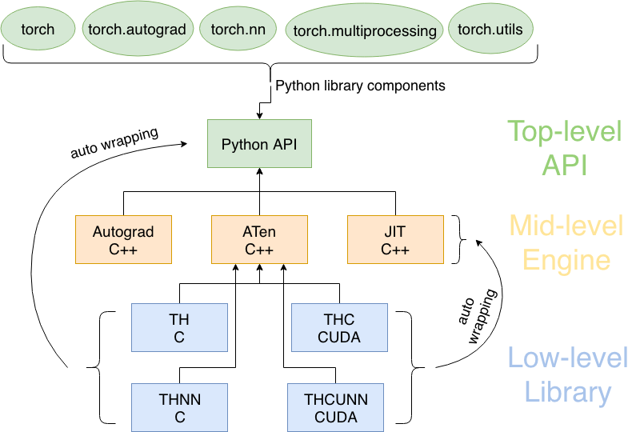

PyTorch Basics
PyTorch is an open-source deep learning framework, widely popular for its flexibility and dynamic computation graph.
PyTorch mainly has the following basic concepts: Tensor, Autograd, neural network module (nn.Module), optimizers (optim), etc.
- Tensor: PyTorch's core data structure, supports multi-dimensional arrays, and can perform accelerated computation on CPU or GPU.
- Autograd: PyTorch provides automatic differentiation functionality, making it easy to compute model gradients for backpropagation and optimization.
- Neural Network (nn.Module): PyTorch provides a simple and powerful API for building neural network models, making it convenient to perform forward propagation and model definition.
- Optimizers: Use optimizers (such as Adam, SGD, etc.) to update model parameters to minimize the loss.
- Device: You can move models and tensors to the GPU to accelerate computation.
PyTorch Architecture Overview
PyTorch adopts a modular design, consisting of multiple core components that work together. Understanding the roles and relationships of these components is key to mastering PyTorch.
PyTorch Architecture Diagram
┌─────────────────────────────────────────────────────────────┐ │ PyTorch 生态系统 │ ├─────────────────────────────────────────────────────────────┤ │ torchvision │ torchtext │ torchaudio │ 其他专业库 │ ├─────────────────────────────────────────────────────────────┤ │ PyTorch 核心 │ ├───────────────┬─────────────────┬───────────────────────────┤ │ torch.nn │ torch.optim │ torch.utils │ │ (神经网络) │ (优化器) │ (工具函数) │ ├───────────────┼─────────────────┼───────────────────────────┤ │ │ │ torch.utils.data │ │ torch 核心 │ autograd │ (数据加载) │ │ (张量计算) │ (自动微分) │ │ └───────────────┴─────────────────┴───────────────────────────┘
PyTorch adopts alayered architecturedesign, from top to bottom as follows:
1. Python API (top layer)
torch: Core tensor computation (similar to NumPy, supports GPU).torch.nn: Neural network layers, loss functions, etc.torch.autograd: Automatic differentiation (backpropagation).- Interfaces directly called by developers, simple and easy to use.
2. C++ Core (middle layer)
- ATen: Core library for tensor operations (400+ operations).
- JIT: Just-in-time compilation to optimize models.
- Autograd engine: Low-level implementation of automatic differentiation.
- High-performance computing, connecting Python and underlying hardware.
3. Basic Libraries (bottom layer)
- TH/THNN: Basic tensor and neural network operations implemented in C.
- THC/THCUNN: Corresponding CUDA (GPU) version.
- Directly operates on hardware (CPU/GPU), optimizing speed to the extreme.
Execution Flow：
Python code → C++ core computation → low-level CUDA/C library acceleration → return result.
It maintains ease of use while ensuring high performance.

Tensor
Tensor is the core data structure in PyTorch, used to store and manipulate multi-dimensional arrays.
A tensor can be viewed as a multi-dimensional array that supports accelerated computation operations.
In PyTorch, tensors are conceptually similar to arrays in NumPy, but PyTorch tensors can run on different devices, such as CPU and GPU, which makes them well-suited for large-scale parallel computation, especially in deep learning.
-
Dimensionality: The dimensionality of a tensor refers to the multi-dimensional array structure of the data. For example, a scalar (0-dimensional tensor) is a single number, a vector (1-dimensional tensor) is a one-dimensional array, a matrix (2-dimensional tensor) is a two-dimensional array, and so on.
-
Shape: The shape of a tensor refers to the size of each dimension. For example, a tensor with shape
(3, 4)means it has 3 rows and 4 columns. -
Dtype: The data type in a tensor defines the memory size needed to store each element and how it is interpreted. PyTorch supports multiple data types, including integer types (e.g.,
torch.int8、torch.int32), floating-point types (e.g.,torch.float32、torch.float64) and boolean type (torch.bool）。
Tensor Creation:
Example
# 创建一个 2x3 的全 0 张量
a = torch.zeros(2, 3)
print(a)
# 创建一个 2x3 的全 1 张量
b = torch.ones(2, 3)
print(b)
# 创建一个 2x3 的随机数张量
c = torch.randn(2, 3)
print(c)
# 从 NumPy 数组创建张量
import numpy as np
numpy_array = np.array([[1, 2], [3, 4]])
tensor_from_numpy = torch.from_numpy(numpy_array)
print(tensor_from_numpy)
# 在指定设备（CPU/GPU）上创建张量
device = torch.device("cuda" if torch.cuda.is_available() else "cpu")
d = torch.randn(2, 3, device=device)
print(d)
The output is similar to the following:
tensor([[0., 0., 0.],
[0., 0., 0.]])
tensor([[1., 1., 1.],
[1., 1., 1.]])
tensor([[ 1.0189, -0.5718, -1.2814],
[-0.5865, 1.0855, 1.1727]])
tensor([[1, 2],
[3, 4]])
tensor([[-0.3360, 0.2203, 1.3463],
[-0.5982, -0.2704, 0.5429]])
Common Tensor Operations:
Example
e = torch.randn(2, 3)
f = torch.randn(2, 3)
print(e + f)
# 逐元素乘法
print(e * f)
# 张量的转置
g = torch.randn(3, 2)
print(g.t()) # 或者 g.transpose(0, 1)
# 张量的形状
print(g.shape) # 返回形状
Tensor and Device
PyTorch tensors can exist on different devices, including CPU and GPU. You can move tensors to the GPU to accelerate computation:
if torch.cuda.is_available():
tensor_gpu = tensor_from_list.to('cuda') # 将张量移动到GPU
Gradients and Automatic Differentiation
PyTorch tensors support automatic differentiation, a key feature in deep learning. When you create a tensor that requires gradients, PyTorch can automatically compute its gradient:
Example
tensor_requires_grad = torch.tensor([1.0], requires_grad=True)
# 进行一些操作
tensor_result = tensor_requires_grad * 2
# 计算梯度
tensor_result.backward()
print(tensor_requires_grad.grad) # 输出梯度
Memory and Performance
PyTorch tensors also provide some memory management features, such as .clone(), .detach(), and .to() methods, which can help you optimize memory usage and improve performance.
Autograd (Automatic Differentiation)
Automatic Differentiation, abbreviated as Autograd, is a core feature in deep learning frameworks, which allows computers to automatically compute derivatives of mathematical functions.
In deep learning, automatic differentiation is mainly used for two purposes:One is computing gradients when training neural networks，The other is implementing the backpropagation algorithm。
Automatic differentiation is based on the chain rule, a mathematical rule for computing derivatives of complex functions. The chain rule states that the derivative of a composite function is the product of the derivatives of its constituent parts. In deep learning, models are typically complex functions composed of many layers, and automatic differentiation can efficiently compute the gradients of these layers.
Dynamic Graph vs Static Graph:
-
Dynamic Graph: In a dynamic graph, the computation graph is built dynamically at runtime. Every time an operation is executed, the computation graph updates, which makes debugging and modifying models easier. PyTorch uses dynamic graphs.
-
Static Graph: In a static graph, the computation graph is constructed before execution begins and does not change. TensorFlow originally used static graphs, but later also supported dynamic graphs.
PyTorch provides automatic differentiation functionality, using the autograd module to automatically compute gradients.
The torch.Tensor object has a requires_grad attribute, which indicates whether the gradient of that tensor needs to be computed.
When you create a tensor with requires_grad=True, PyTorch automatically tracks all operations on it in order to compute gradients later.
Creating a Tensor that Requires Gradients:
Example
x = torch.randn(2, 2, requires_grad=True)
print(x)
# 执行某些操作
y = x + 2
z = y * y * 3
out = z.mean()
print(out)
The output is similar to the following:
tensor([[0., 0., 0.],
[0., 0., 0.]])
tensor([[1., 1., 1.],
[1., 1., 1.]])
tensor([[ 1.0189, -0.5718, -1.2814],
[-0.5865, 1.0855, 1.1727]])
tensor([[1, 2],
[3, 4]])
tensor([[-0.3360, 0.2203, 1.3463],
[-0.5982, -0.2704, 0.5429]])
tianqixin@Mac-mini runoob-test % python3 test.py
tensor([[-0.1908, 0.2811],
[ 0.8068, 0.8002]], requires_grad=True)
tensor(18.1469, grad_fn=<MeanBackward0>)
Backpropagation
Once the computation graph is defined, you can use the.backward()method to compute gradients.
Example
out.backward()
# 查看 x 的梯度
print(x.grad)
In neural network training, automatic differentiation is mainly used to implement the backpropagation algorithm.
Backpropagation is a method for training neural networks by computing the gradient of the loss function with respect to network parameters. In each iteration, the network's forward propagation computes the output and loss, then backpropagation computes the gradient of the loss with respect to each parameter and uses these gradients to update the parameters.
Stopping Gradient Computation
If you do not want the gradients of certain tensors to be computed (e.g., when you do not need backpropagation), you can usetorch.no_grad()or setrequires_grad=False。
Example
with torch.no_grad():
y = x * 2
Neural Network (nn.Module)
A neural network is a computational model that mimics the connections of neurons in the human brain. It consists of multiple layers of nodes (neurons) and is used to learn complex patterns and relationships in data.
Neural networks optimize prediction results by adjusting the connection weights between neurons. This process involves forward propagation, loss calculation, backpropagation, and parameter updates.
Types of neural networks include feedforward neural networks, convolutional neural networks (CNNs), recurrent neural networks (RNNs), and long short-term memory networks (LSTMs). They are widely used in fields such as image recognition, speech processing, and natural language processing.
PyTorch provides a very convenient interface for building neural network models, namelytorch.nn.Module。
We can inherit the nn.Module class and define our own network layers.
Create a simple neural network:
Example
import torch.optim as optim
# Define a simple fully connected neural network
class SimpleNN(nn.Module):
def __init__(self):
super(SimpleNN, self).__init__()
self.fc1 = nn.Linear(2, 2) # Input layer to hidden layer
self.fc2 = nn.Linear(2, 1) # Hidden layer to output layer
def forward(self, x):
x = torch.relu(self.fc1(x)) # ReLU activation function
x = self.fc2(x)
return x
# Create network instance
model = SimpleNN()
# Print model structure
print(model)
Output result:
SimpleNN( (fc1): Linear(in_features=2, out_features=2, bias=True) (fc2): Linear(in_features=2, out_features=1, bias=True) )
Training process:
-
Forward Propagation: In the forward propagation phase, input data is passed through the network layers, with each layer applying weights and activation functions until an output is produced.
-
Calculate Loss: Calculate the value of the loss function based on the network's output and the true labels.
-
Backpropagation: Backpropagation uses automatic differentiation techniques to compute the gradient of the loss function with respect to each parameter.
-
Parameter Update: Use an optimizer to update the network's weights and biases based on the gradients.
-
Iteration: Repeat the above process until the model's performance on the training data reaches a satisfactory level.
Forward Propagation and Loss Calculation
Example
x = torch.randn(1, 2)
# Forward propagation
output = model(x)
print(output)
# Define loss function (e.g., mean squared error MSE)
criterion = nn.MSELoss()
# Assume target value is 1
target = torch.randn(1, 1)
# Calculate loss
loss = criterion(output, target)
print(loss)
Optimizers
Optimizers update the parameters of a neural network during training to reduce the value of the loss function.
PyTorch provides a variety of optimizers, such as SGD, Adam, etc.
Using an optimizer for parameter updates:
Example
optimizer = optim.Adam(model.parameters(), lr=0.001)
# Training step
optimizer.zero_grad() # Clear gradients
loss.backward() # Backpropagation
optimizer.step() # Update parameters
Training the Model
Training a model is the core process in machine learning and deep learning. It aims to learn model parameters from a large amount of data so that the model can make accurate predictions on new, unseen data.
Training a model typically includes the following steps:
-
Data Preparation：
- Collect and process data, including cleaning, standardization, and normalization.
- Split the data into training, validation, and test sets.
-
Define the Model：
- Choose the model architecture, such as decision trees, neural networks, etc.
- Initialize model parameters (weights and biases).
-
Select a Loss Function：
- Choose an appropriate loss function according to the task type (e.g., classification, regression).
-
Select an Optimizer：
- Choose an optimization algorithm, such as SGD, Adam, etc., to update model parameters.
-
Forward Propagation：
- In each iteration, pass input data through the model and compute the predicted output.
-
Calculate Loss：
- Use the loss function to evaluate the difference between the predicted output and the true labels.
-
Backpropagation：
- Use automatic differentiation to compute the gradient of the loss with respect to model parameters.
-
Parameter Update：
- Update model parameters according to the computed gradients and the optimizer's strategy.
-
Iterative Optimization：
- Repeat steps 5-8 until the model's performance on the validation set no longer improves or a predetermined number of iterations is reached.
-
Evaluation and Testing：
- Use the test set to evaluate the model's final performance to ensure the model is not overfitting.
-
Model Tuning：
- Adjust hyperparameters based on the model's performance on the test set, such as changing the learning rate, adding regularization, etc.
-
Deploy the Model：
- Deploy the trained model to a production environment for actual prediction tasks.
Example
import torch.nn as nn
import torch.optim as optim
# 1. Define a simple neural network model
class SimpleNN(nn.Module):
def __init__(self):
super(SimpleNN, self).__init__()
self.fc1 = nn.Linear(2, 2) # Input layer to hidden layer
self.fc2 = nn.Linear(2, 1) # Hidden layer to output layer
def forward(self, x):
x = torch.relu(self.fc1(x)) # ReLU activation function
x = self.fc2(x)
return x
# 2. Create model instance
model = SimpleNN()
# 3. Define loss function and optimizer
criterion = nn.MSELoss() # Mean squared error loss function
optimizer = optim.Adam(model.parameters(), lr=0.001) # Adam optimizer
# 4. Assume we have training data X and Y
X = torch.randn(10, 2) # 10 samples, 2 features
Y = torch.randn(10, 1) # 10 target values
# 5. Training loop
for epoch in range(100): # Train for 100 epochs
optimizer.zero_grad() # Clear previous gradients
output = model(X) # Forward propagation
loss = criterion(output, Y) # Calculate loss
loss.backward() # Backpropagation
optimizer.step() # Update parameters
# Print loss every 10 epochs
if (epoch+1) % 10 == 0:
print(f'Epoch [{epoch+1}/100], Loss: {loss.item():.4f}')
The output result is as follows:
Epoch [10/100], Loss: 1.7180 Epoch [20/100], Loss: 1.6352 Epoch [30/100], Loss: 1.5590 Epoch [40/100], Loss: 1.4896 Epoch [50/100], Loss: 1.4268 Epoch [60/100], Loss: 1.3704 Epoch [70/100], Loss: 1.3198 Epoch [80/100], Loss: 1.2747 Epoch [90/100], Loss: 1.2346 Epoch [100/100], Loss: 1.1991
Every 10 epochs, the program outputs the current loss value, helping us track the training progress of the model. As training proceeds, the loss value should gradually decrease, indicating that the model is continuously learning and optimizing its parameters.
Training a model is an iterative process that requires continuous adjustment and optimization until satisfactory performance is achieved. This process involves a large number of experiments and tuning, aiming to give the model good generalization ability on new, unseen data.
Device
PyTorch allows you to move models and data to a GPU for acceleration.
Usetorch.deviceto specify the computing device.
Move the model and data to GPU:
Example
# Move the model to the device
model.to(device)
# Move the data to the device
X = X.to(device)
Y = Y.to(device)
During training, all tensors and models should be moved to the same device (either all on the CPU or all on the GPU).
Additional Extensions
Click to Share Notes
<p style="font-size:14px;">Notes need to be an extension of the content of this article!</p><br> <p style="font-size:12px;"><a href="../tougao.html" target="_blank">Submit an article, click here</a></p> <p style="font-size:14px;"><a href="../w3cnote/runoob-user-test-intro.html" target="_blank">How to get a registration invitation code</a></p> <h3 class="text-muted"><i class="fa fa-info-circle" aria-hidden="true"></i> You must <a href=";.html" class="runoob-pop">log in</a> before sharing notes!</h3> <p><a href="../w3cnote/runoob-user-test-intro.html" target="_blank">How to get a registration invitation code</a></p>